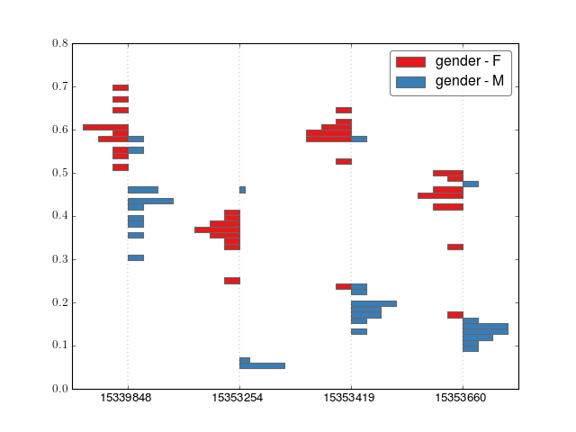
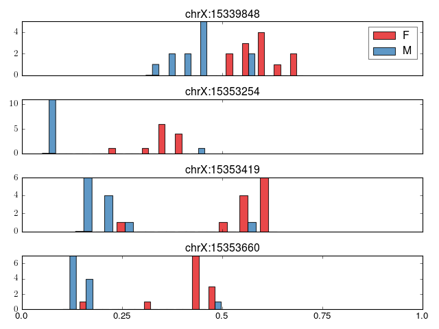

plot¶
crystal.plot contains functions for plotting clusters.
Plotting functions for Clusters.
Note that some visualizations work best with datasets that have fewer samples while some are more informative with more samples.
- crystal.plot.barplot_cluster(cluster, covs, normed=False, n_bins=50)[source]¶
Make a barplot of a cluster. Only works for 2-class data, e.g. gender or case-control
>>> import crystal >>> import crystal.utils as cu >>> covs, cluster = cu.real_cluster() >>> formula = "methylation ~ age + gender" >>> c = crystal.wrapper(crystal.zscore_cluster, formula, cluster, covs, "gender") >>> crystal.plot.barplot_cluster(c, covs)
(Source code, png, hires.png, pdf)

{kind=link}
{kind=link}
- crystal.plot.factorplot_cluster(cluster, cov, palette='Set1', ilogit=False)[source]¶
Create a factor plot.
>>> import crystal >>> import crystal.utils as cu >>> covs, cluster = cu.real_cluster() >>> formula = "methylation ~ age + gender" >>> c = crystal.wrapper(crystal.zscore_cluster, formula, cluster, covs, "gender") >>> crystal.plot.factorplot_cluster(c, covs)
(Source code, png, hires.png, pdf)

{kind=link}
{kind=link}
- crystal.plot.plot_cluster(cluster, covs, normed=False)[source]¶
Plot a cluster (output from crystal.model_cluster)
Plot will vary depending on if cluster[‘var’] is dichotomous or continuous.
>>> import crystal >>> import crystal.utils as cu >>> covs, cluster = cu.real_cluster() >>> formula = "methylation ~ age + gender" >>> c = crystal.wrapper(crystal.zscore_cluster, formula, cluster, covs, "gender") >>> crystal.plot.plot_cluster(c, covs)
(Source code, png, hires.png, pdf)
We will get a different plot if the cluster is a continuous variable.
{kind=link}
{kind=link}
- crystal.plot.spaghetti_plot(cluster, cov, ax=None, ilogit=False, palette='Set1')[source]¶
- Create a spaghetti plot of a modeled cluster. This is best when the
- number of samples is less than about 20. Otherwise, use plot_cluster()
>>> import crystal >>> import crystal.utils as cu >>> covs, cluster = cu.real_count_cluster() >>> covs.head() >>> formula = "methylation ~ ko" >>> c = crystal.wrapper(crystal.zscore_cluster, formula, cluster, covs, "ko") >>> crystal.plot.spaghetti_plot(c, covs)
(Source code, png, hires.png, pdf)

Note
in the case of CountFeature as from sequence data, the points are sized by the sequencing depth.
{kind=link}
{kind=link}